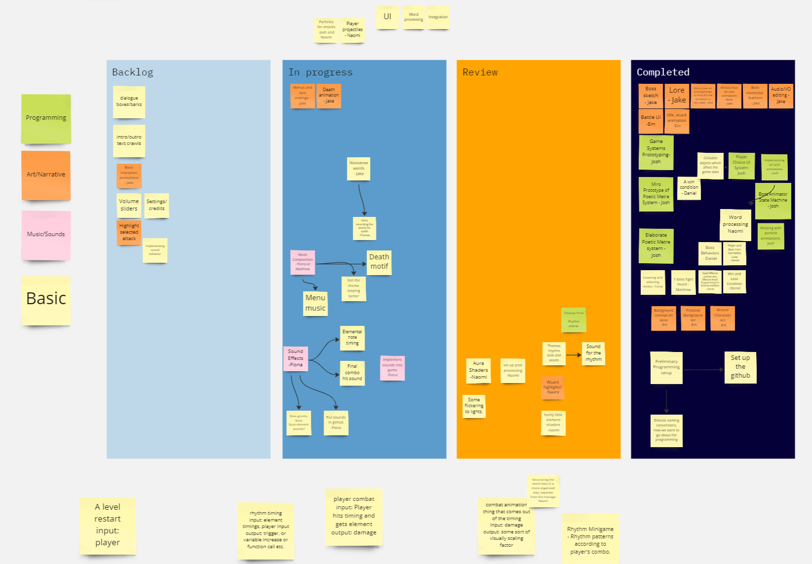
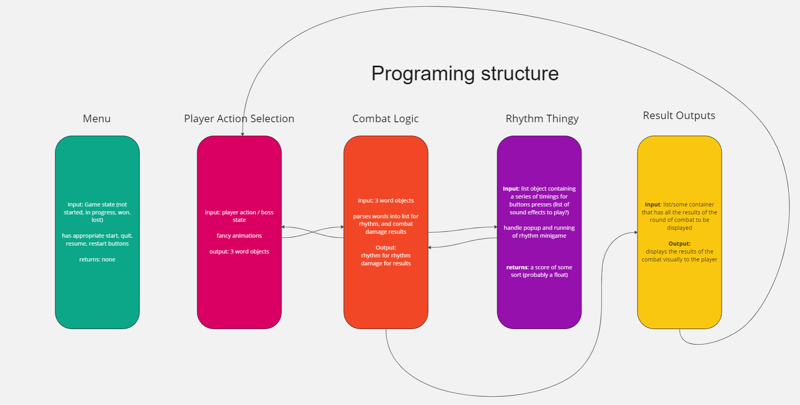
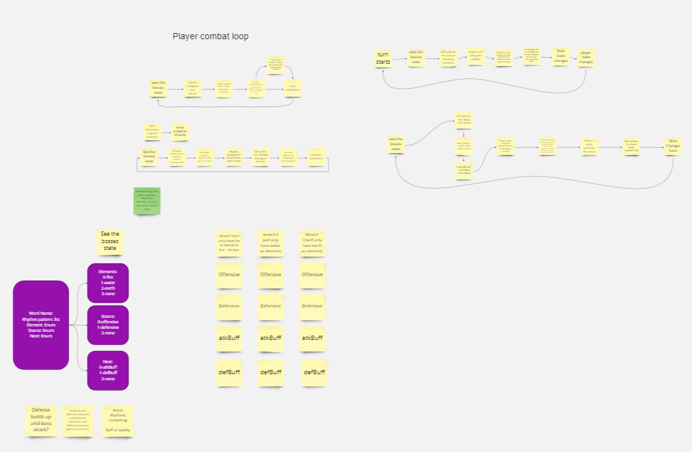
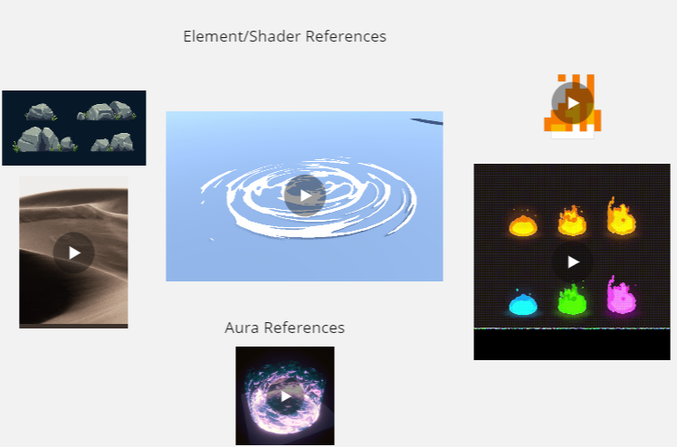
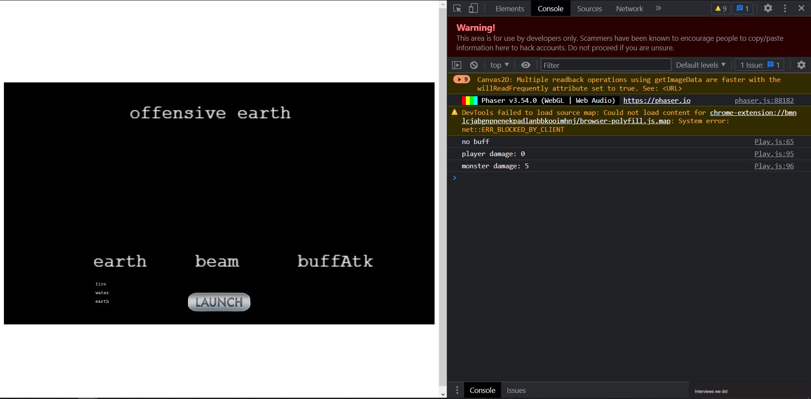

Final Prototype
Project Management
Early Prototypes
- The Result
The game we ended up with does a good job of demonstrating the mechanics of the initial design. - Focus
During this project I decided to explicitly focus on two things. First, communicating with the team to prevent integration issues, and second improving the utility of rapid prototypes.
- Miro
Miro Was our primary organizational tool for this project - Task Management
We used miro to track tasks, assigning each person a set of tasks to do before the next meeting. - Structural decision Making
Additionally we used the diagraming features to help us break the overall game into a set of modules, with agreed upon data being passed back and forth - Combat Loop Decisions
Early in the project we were having some communication issues, so we had everyone sit down and draw out what they thought the combat loop looked like, and then talked through them until we agreed upon the final system. - Graphical inspirations
The last thing we used Miro for was as a space to share inspirations for creating the various visual effects.
- Rhythm Prototype
This prototype was more to illustrate the idea of the rhythm system than to test anything about it, the final system has dynamic target placement that wasn't implemented here, but it got the entire team on the same page. I mocked up this prototype in about 15 minutes by borrowing code from my previous project DVD. - Elemental Effects Prototype
This was a quick calculator I made to explore the various effects of the different wizard options. It uses modular drop down menus to allow rapid testing of a variety of interactions.





